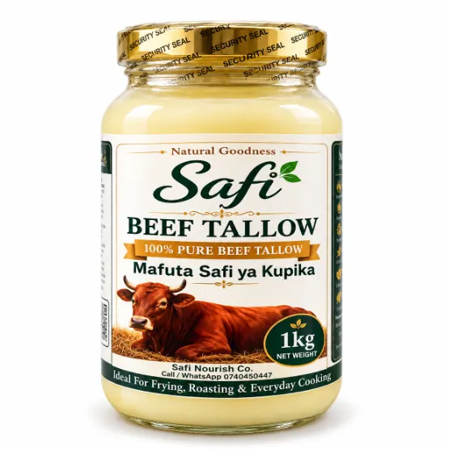
Beef Tallow — 1kg Glass Jar
KES 850.00
Premium beef tallow packaged in a reusable glass jar.
Add to CartA little tallow goes a long way. Discover thoughtfully packaged beef and sheep tallow for everyday cooking, family meals and convenient bulk supply.
Shop online
18 product displays in three clearly labelled categories: Beef Tallow, Sheep Tallow and 10-litre Bulk. All four retail packaging formats are preserved; featured products repeat without creating new sizes.
1kg Glass • 500g Glass • 1kg Plastic • 500g Plastic — plus four featured displays

KES 850.00
Premium beef tallow packaged in a reusable glass jar.
Add to Cart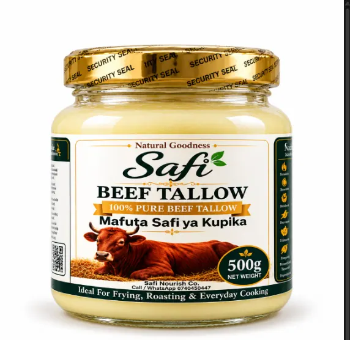
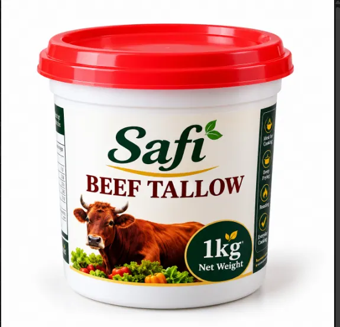
KES 750.00
Carefully rendered beef tallow for everyday cooking.
Add to Cart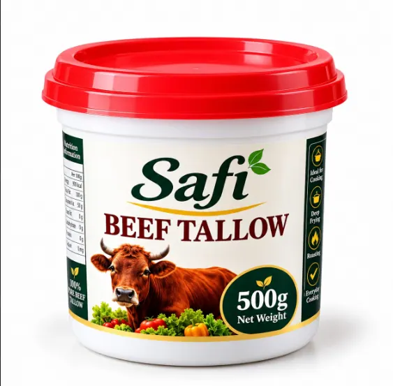
KES 350
A convenient smaller pack for customers who want to try beef tallow or use it occasionally.
Add to CartKES 850.00
Premium beef tallow packaged in a reusable glass jar.
Add to CartKES 450
Premium beef tallow in a compact reusable glass jar.
Add to CartKES 750.00
Carefully rendered beef tallow for everyday cooking.
Add to CartKES 350
A convenient smaller pack for customers who want to try beef tallow or use it occasionally.
Add to Cart1kg Glass • 500g Glass • 1kg Plastic • 500g Plastic — plus four featured displays
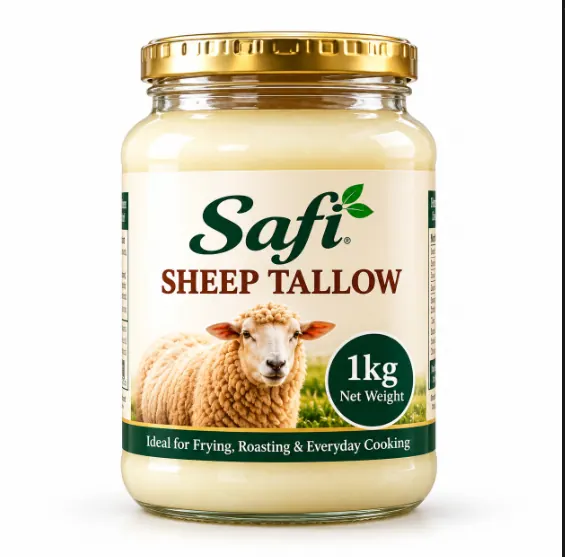
KES 1,150.00
Premium sheep tallow packaged in a reusable glass jar.
Add to Cart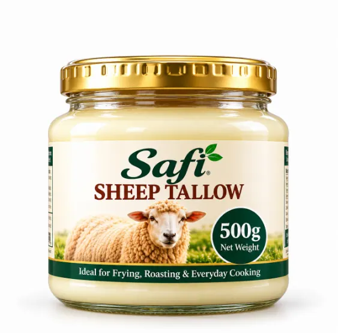
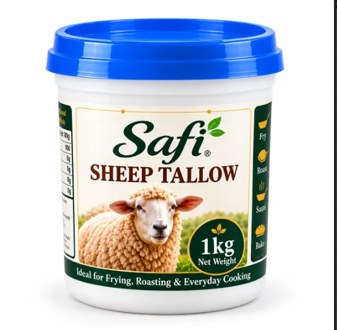
KES 950.00
Carefully rendered sheep tallow suitable for frying, roasting and traditional cooking.
Add to Cart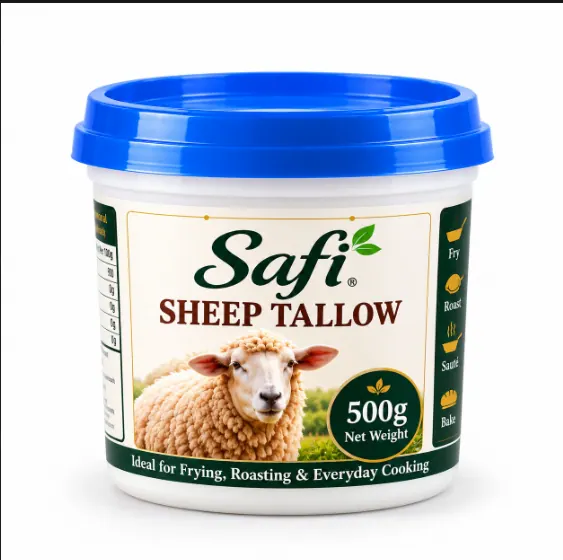
KES 500
A practical smaller sheep tallow pack for regular home cooking.
Add to CartKES 1,150.00
Premium sheep tallow packaged in a reusable glass jar.
Add to CartKES 600.00
Sheep tallow in a convenient reusable glass jar.
Add to CartKES 950.00
Carefully rendered sheep tallow suitable for frying, roasting and traditional cooking.
Add to CartKES 500
A practical smaller sheep tallow pack for regular home cooking.
Add to Cart10L bucket sizes for food service and larger orders
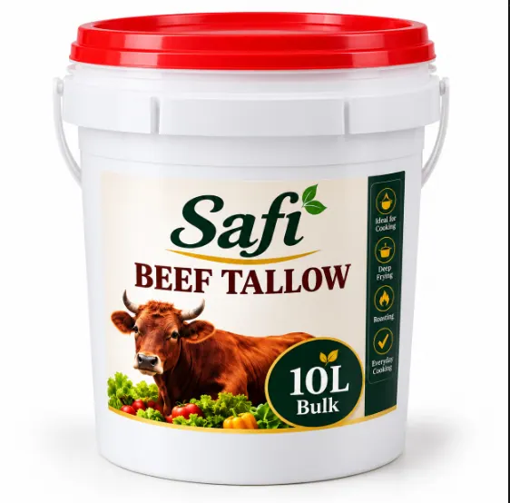
KES 7,000.00
Bulk beef tallow for restaurants, caterers, food businesses and high-volume users.
Add to Cart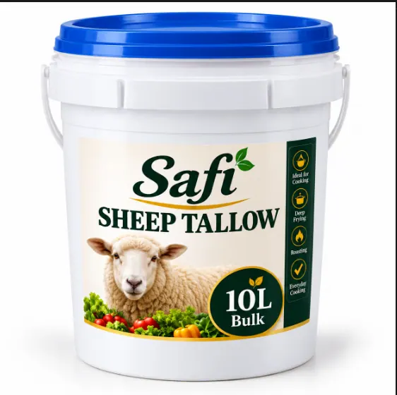
KES 9,000.00
Bulk sheep tallow for restaurants, caterers, food businesses and high-volume users.
Add to CartFrom chapati and potatoes to stews and frying, Safi Nourish helps bring traditional cooking value back into the kitchen.
Why tallow? ↗Explore the people, traditions and products behind Safi Nourish.
Explore our moments ↗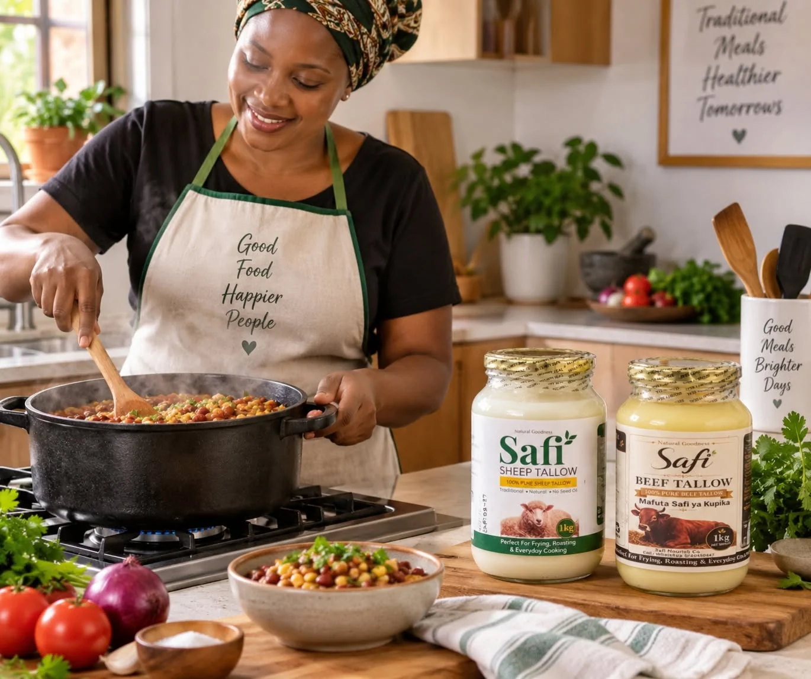